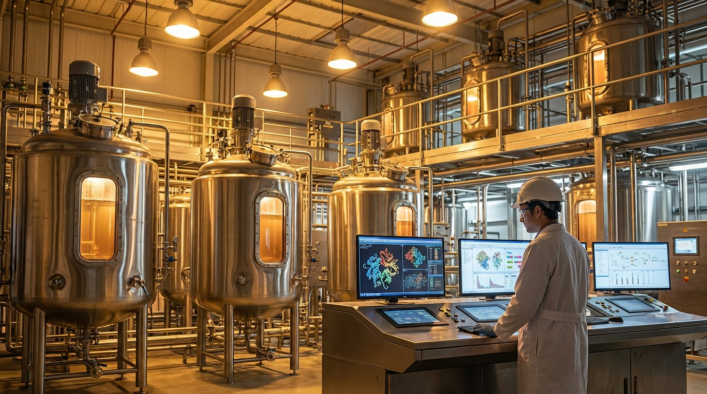

Cultivated Meat Burned $3 Billion and Died. Precision Fermentation Shipped Mozzarella.
While the "lab-grown meat" industry collapsed into lawsuits and shuttered factories, the boring technology — yeast in vats making dairy proteins — quietly got onto grocery shelves in 14 countries. Nobody threw it a parade.

Jeff Tripician spent decades in the traditional meat industry before becoming CEO of Meatable, a Dutch cultivated meat startup that Time magazine named one of its best inventions of 2024. In January 2026, he was the guy turning off the lights.
"Cultivated meat is broken," he told Food Ingredients First after Meatable shut down alongside Believer Meats, which had just completed a 12,000-ton-capacity factory in North Carolina and secured both FDA and USDA clearance. Full regulatory approval. Biggest facility ever built. Doors closed anyway. Over $390 million — gone.
Tripician's diagnosis: scientists who "said what they felt they needed to say" to private equity investors expecting 5–7 year returns on technology that needed decades.
Meanwhile, 5,600 miles away, Formo's micro-fermented cheese was sitting in METRO and REWE supermarkets across Germany and Austria. No one held a press conference.
The Graveyard vs. the Grocery Aisle
The funding collapse is staggering. According to AgFunder, cultivated meat investment peaked at $989 million in 2021. By 2024, it was $55 million — a 94% drop. Not a correction. An extinction event.
| Year | Cultivated Meat Funding | Δ |
|---|---|---|
| 2021 | $989M | Peak |
| 2022 | $807M | −18% |
| 2023 | $177M | −78% |
| 2024 | $55M | −69% |
| 2025 | ~$65M (est.) | Flatlined |
The body count is worse than the numbers suggest:
- Believer Meats — $390M raised. Built the world's largest cultivated meat factory. Secured FDA + USDA approval. Shut down December 2025. Left $34 million in unpaid construction bills. Gray Construction sued. Settlement deadline missed.
- Meatable — $100M+ raised. Time Best Inventions 2024. Failed to close a $35M Series C. Ceased operations late 2025.
- UPSIDE Foods — $608M raised. Three rounds of layoffs (Feb 2024, Jul 2024, Mar 2025). Paused its Illinois factory. Retreated to a smaller Emeryville facility. Whole-cut technology "not yet ready for widespread market introduction" — their words.
Seven US states and two EU member states (Italy and Hungary) have banned cultivated meat outright. The EU's Biotech Act, published December 2025, explicitly excluded novel foods from regulatory sandboxes. The lobby won.
The Other Technology
Precision fermentation doesn't grow animal cells. It programs microorganisms — yeast, fungi, bacteria — to produce specific animal proteins. No bioreactor the size of a building. No fetal bovine serum. No cell line immortalization debates. You feed sugar to yeast. The yeast makes whey. You extract the whey.
It sounds boring. It is boring. That's why it works.
| Company | Product | Status | Where You Can Buy It |
|---|---|---|---|
| Perfect Day | Whey protein (beta-lactoglobulin) | FDA GRAS ✅, shipping B2B | Ingredients in 30+ consumer products (ice cream, protein powder, cream cheese) |
| Formo | Micro-fermented cheese (Koji) | EU approved, selling retail | METRO & REWE supermarkets, Germany/Austria since Sep 2024 |
| New Culture | Animal-free mozzarella (casein) | FDA GRAS ✅, $5M+ in early orders | Pizzerias across the US, incl. Nancy Silverton's Pizzeria Mozza |
| Remilk | Whey protein for dairy | Israel approved ✅, US GRAS filed | "The New Milk" range via Gad Dairies (Israel) |
| Bon Vivant | Recombinant BLG whey | FDA GRAS self-affirmed (Jan 2025) | B2B — CPG partnerships pending |
| Impossible Foods | Soy leghemoglobin (heme) | FDA GRAS ✅ since 2019 | Burger King, Walmart, 40,000+ locations |
That last row matters. Impossible Foods has been using precision fermentation to make heme — the molecule that makes its burgers "bleed" — since 2019. It's in 40,000+ retail and foodservice locations. Nobody calls Impossible a "precision fermentation company." They call it a burger company. Which is exactly the point.
The Nancy Silverton Test
When a James Beard Award winner — someone who named her restaurant Mozza, for God's sake — puts your animal-free mozzarella on her menu, that's not a tech demo. That's product-market fit.
New Culture's mozzarella uses precision-fermented casein, the protein responsible for stretch and melt. It performs identically in wood-fired, gas, and electric ovens at 500°–900°F. No soy. No nuts. No lactose. No cholesterol.
$5 million in early demand from US pizzerias before the product even hit full production. Less than 0.5% of the 25,000+ pizzerias offering plant-based cheese are satisfied with current alternatives. The market is begging.
The Funding Gap That Tells the Story
Formo raised €135 million total, including a €35 million loan from the European Investment Bank in January 2025 — a quasi-equity venture debt instrument backed by the EU's InvestEU guarantee. The EIB doesn't fund science projects. They fund companies that are scaling.
Perfect Day has raised $840 million to date but had a rough 2024 — founders stepped down, interim CEO installed, consumer brands sold off to a new company called Superlatus. The strategic pivot: stop trying to be a consumer brand, focus on being a B2B ingredient supplier. Sounds like retreat. Actually sounds like survival.
The CPG partnerships that fizzled — Mars's CO2COA (discontinued), Nestlé's Cowabunga (handful of stores), General Mills' Bold Cultr (pulled) — all failed not because the ingredient was bad, but because nobody wanted to pay a premium for "animal-free" on products where the original didn't bother anyone. Ice cream lovers aren't lying awake about cow welfare. They want ice cream.
The lesson Perfect Day learned the hard way: precision fermentation wins when it replaces something people already want to avoid (lactose, allergens, cholesterol) or when it outperforms the original on a dimension chefs care about (consistency, shelf stability, melt behavior). Not when it's marketed as a moral choice.
Why One Technology Died and the Other Didn't
Cultivated meat's fundamental problem was never cost — though $6.97/lb wholesale for UPSIDE chicken breast is still twice conventional chicken. The problem was infrastructure.
As I wrote in this publication three months ago: producing 1% of US meat consumption would require 21,700 ten-thousand-liter bioreactors. The entire global pharmaceutical industry operates about 7,000. You need to triple a century of pharmaceutical manufacturing infrastructure just to make 1% of one country's meat.
Precision fermentation doesn't have this problem. The infrastructure already exists. Ethanol plants, pharmaceutical fermenters, brewing equipment — all can be repurposed. Hydrosome Labs is working with ethanol producers to add precision fermentation as a co-product stream, using existing stainless steel tanks. No new factory required.
The unit economics are different, too:
| Cultivated Meat | Precision Fermentation | |
|---|---|---|
| Input | Mammalian cells | Yeast/fungi/bacteria |
| Growth medium | $50–200/L (serum-free) | $1–5/L (sugar + nutrients) |
| Batch cycle | 2–3 weeks | 2–5 days |
| Contamination risk | High (mammalian cells) | Low (microbial resilience) |
| Existing infrastructure | None (custom build) | Breweries, ethanol plants, pharma |
| Regulatory pathway | Novel food (lengthy) | GRAS self-affirmation (faster) |
Two-to-five days versus two-to-three weeks. Commodity sugar versus exotic growth media. Existing tanks versus custom factories. It was never a fair fight.
What Comes Next
Eshchar Ben-Shitrit, founder of Redefine Meat, offered the most honest epitaph for cultivated meat's first wave: "After 10 years, the companies in the field produce cells, but producing cells is not producing meat. The cells do not contribute at all, at least not significantly, to taste or texture."
Precision fermentation isn't a replacement for meat. It's a replacement for specific molecules — whey, casein, collagen, heme, egg whites. The companies that understand this distinction are the ones shipping product. The ones that tried to be "the future of meat" are the ones filing for bankruptcy.
Grand View Research values the precision fermentation market at $4.91 billion in 2025. India is projected to grow at 49.9% CAGR through 2033. North America holds 40.8% market share. These numbers are real revenue from real products — not projections based on bioreactor capacity that doesn't exist.
The boring technology won. As usual.
Sources
- Jeff Tripician interview — Food Ingredients First, "Cultivated meat is broken," Jan 26, 2026
- Believer Meats shutdown — Calcalist Tech, "After $390M in funding, Believer Meats shuts down," Dec 2025
- Cultivated meat funding data ($989M→$55M) — AgFunder, Annual Investment Reports 2021–2025
- UPSIDE Foods restructuring — New Tech Foods, "Upside Foods restructures amid industry challenges," Mar 2025
- Formo EIB loan (€35M) — European Investment Bank Press Release, Jan 2025
- New Culture mozzarella + Nancy Silverton — SaladPlate, "A Slice of Innovation," May 2025
- Perfect Day leadership change + $840M funding — AgFunderNews, "Perfect Day raises ~$90M, installs interim CEO," Jan 2024
- Bon Vivant FDA GRAS — Sofinnova Partners, Jan 2025
- Remilk + Gad Dairies — Green Queen, "Remilk & Gad Dairies Roll Out Cow-Free Milk," 2025
- US state cultivated meat bans (7 states) — Food Ingredients First, Jan 2026
- EU Biotech Act novel foods exclusion — Food Ingredients First, referencing EU Biotech Act, Dec 2025
- Precision fermentation market ($4.91B, 2025) — Precedence Research, Precision Fermentation Market Report, 2025
- Grand View Research market sizing + India CAGR — Grand View Research, Precision Fermentation Market 2025–2033
- Hydrosome Labs ethanol co-production — Ethanol Producer Magazine, "Leveraging Precision Fermentation," 2025
- Eshchar Ben-Shitrit quote (Redefine Meat) — SFN Today, Dec 2025